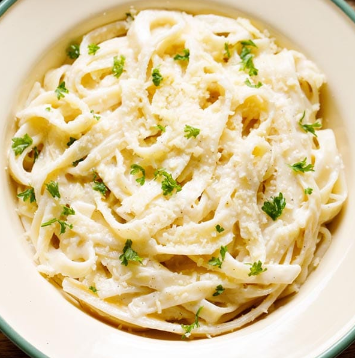

Chicken Bacon Ranch Rolls

These quick and easy to make Chicken Bacon Ranch Rolls are sure to please at the next lunch!
Ingredients
- 24 ounces dry fettuccini pasta
- 1 cup butter
- ¾ pint heavy cream
- salt and pepper to taste
- 1 dash garlic salt
- ¾ cup grated Romano cheese
- ½ cup grated Parmesan cheese
Instructions
- Bring a large pot of lightly salted water to a boil. Add fettuccini and cook for 8 to 10 minutes or until al dente; drain.
- In a large saucepan, melt butter into cream over low heat. Add salt, pepper and garlic salt. Stir in cheese over medium heat until melted; this will thicken the sauce.
- Add pasta to sauce. Use enough of the pasta so that all of the sauce is used and the pasta is thoroughly coated. Serve immediately.